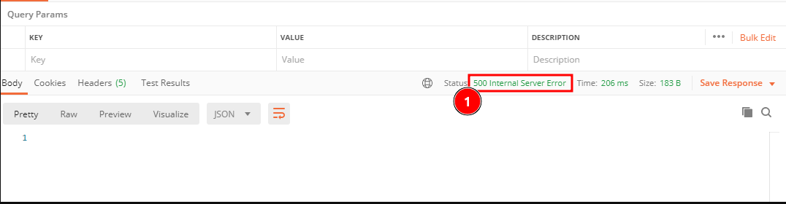
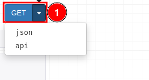
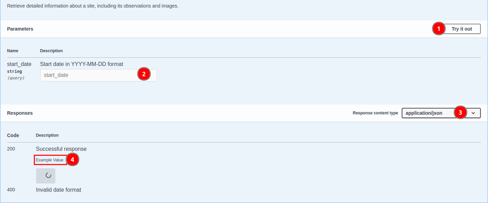

Accessing the miniSASS 3rd Party API¶
This guide provides a detailed procedure for accessing the miniSASS 3rd party API, allowing you to retrieve site and observation data. The first section outlines the API and using a service like Postman and the second section outlines the use of Swagger as a standardized way to access the API.
API Endpoint¶
The API can be accessed at the following URL:
https://minisass.org/monitor/sites-with-observations/?start_date=YYYY-MM-DD
Parameters¶
- start_date: Specify the date from which you want to retrieve data. Format: YYYY-MM-DD.
Step-by-Step Procedure¶
Set Up Your Environment:¶
To interact with the API, you can use tools like Postman, cURL, or any programming language that supports HTTP requests.
1. Using Postman¶
- Download and Install Postman: If you have not already, download Postman from Postman’s official website.
2. Create a New Request¶
Open Postman then click on 1️⃣ New and then choose 2️⃣ HTTP Request.

After choosing the Http Request, you will receive the following window.
-
Enter URL: This is an input field allows you to enter your url or api you want to call.
-
Method: This input field allows you to select the method you want to perform with the URL.

- GET: This is used to retrieve data from the server.
-
Send: This is a button that allows you to send your request to the server.
Construct the API URL¶
-
Use the base URL and append your desired start date in the following format:
https://minisass.org/monitor/sites-with-observations/?start_date=YYYY-MM-DD -
Replace YYYY-MM-DD with the date from which you want to retrieve data. For example, for April 13, 2024, the URL will be:
https://minisass.org/monitor/sites-with-observations/?start_date=2024-04-13Note: Ensure that the date is in the correct format (YYYY-MM-DD) to avoid errors.
Make a GET Request¶
Use your selected tool to perform a GET request to the constructed URL.
In Postman:
-
Open Postman and create a new request.
-
Select the GET method.
-
Paste the constructed URL into the request URL field.
-
Click "Send."
To check how to make request click on request process.
Response¶
-
Once you send the request, the API will return the data in data body.
Here are examples of the responses you will receive after sending the request via Postman.
200 OK¶
Request With a Specified Date:
-
The API will return a list of sites with observations from the specified date.
-
The URL should be in the following format:
https://minisass.org/monitor/sites-with-observations/?start_date=2024-03-09
- 200 OK: This status code indicates that the request was successful, and the response data will be returned in the body.
Request Without a Specified Date: If the start date is not specified or provided, the API returns a 200 OK status code along with all available sites and observations.
- The URL without date will look like this:
https://minisass.org/monitor/sites-with-observations
400 Bad Request:¶
If the date is not provided in the correct
YYYY-MM-DDformat, you will receive a 404 Bad Request error with an error message.
-
400 Bad Request: This status code indicates that the request was invalid or cannot be processed.
-
error: This is the error message returned by the API. In our case, the error occurs due to an invalid date format. The correct format should be YYYY-MM-DD.
500 Internal Server Error¶

1.500 Internal Server Error: The server returned a 500 Internal Server Error, indicating that the API is currently down and unable to process the request.
Here are the actions you can take after receiving a 200 OK status code:¶
Site Image¶
The user can also download the site/observation image by clicking on the image URL provided in the response.

Click on the 1️⃣
imageto open the image in your browser, where you can easily download it.
The user can also choose different response formats by clicking on the 1️⃣ dropdown, such as JSON, XML, text etc.

-
Json Format
-
Xml Format

-
Text Format

-
-
You can use the data as per your needs.
Another Way to Make Request
In Browser:
The user can directly send the request using a browser by pasting the URL into the browser's address bar along with the date from which they want to retrieve data.
-
Open your browser and paste the constructed URL into the address bar.
-
Press Enter to send the request.
-
The browser will display one of the following responses in the browser window.
HTTP 200 OK¶
Request With a Specified Date
-
The API will return a list of sites with observations from the specified date.
-
The URL should be in the following format:
https://minisass.org/monitor/sites-with-observations/?start_date=2024-03-09

- 200 OK: This status code indicates that the request was successful and the response body contains the requested data.
Request Without a Specified Date
-
The API will return a list of all sites with observations.
-
The URL without date will look like this:
https://minisass.org/monitor/sites-with-observations
HTTP 400 Bad Request¶
If the date is not provided in the correct YYYY-MM-DD format, you will receive a 404 Bad Request error with an error message.

- 400 Bad Request: This status code indicates the request was invalid or couldn't be processed. The response body will include an error message, which in this case is Invalid date format. Please use YYYY-MM-DD.
HTTP 500 Internal Server Error¶

- 500 Internal Server Error: The server returned a 500 Internal Server Error, indicating that the API is currently down and unable to process the request.
After receiving the 200 OK status code, the user will be able to perform the following actions:¶
Site Image¶
The user can also download the site/observation image by clicking on the image URL provided in the response.
Click on the 1️⃣ image to open the image in your browser, where you can easily download it.
DownLoad Image:¶
-
Right click on the image and select Save Image As.
-
Choose a location to save the image and click 1️⃣
Save.
The following process will download the image in the
jpgformat.
User can also choose response format between JSON and api.
-
Click on the 1️⃣ dropdown to select the response format.

-
The response will be displayed in the selected format.
-
Json Format
Click on 1️⃣
Pretty printto display the response in a readable format.
After this, the response will look like this:

-
Api Format

-
Other ways to access the API¶
Here are two URLs through which user can retrieve/download the site observation data:
Swagger¶
Enables users to interact with the API using Swagger UI.
https://minisass.org.com/swagger/
Accessing the API using Swagger¶
-
Click on this URL:
https://minisass.org.com/swagger/, which will redirect you to the Swagger site.
-
Click on the
GET /monitor/sites-with-observationsendpoint. -
This is the api dashboard which will appear after clicking on the endpoint
GET /monitor/sites-with-observations.
-
Try it out: This option allows you to interact with the API directly.
-
start_date: This is the date from which you want to retrieve the data.
-
Response content type: This is the format in which you will receive the data.
-
Example value: Click on 4️⃣
Example Value, and it will display a sample of the data you will receive.
-
-
Click on 1️⃣
Try it outto access the API, which will enable you to enter the 2️⃣start datein the formatYYYY-MM-DD.
Note: If the
start_dateis provided, the API will return data from that specified date. If not, it will return all site observation data. -
Click on 1️⃣
Executeto retrieve the data, or choose 2️⃣Cancelto abort the process. -
These are the examples of responses you will receive in the response body.
- ** Code 200:** This is the response you will receive along with the data if the request is successful.

- Code 400: This is the response you will receive if the request is not successful.
In our case, we received 1️⃣ a 400 Bad Request code along with 2️⃣ an error message due to an invalid date format.
-
After receiving the response, the user can download the received data by clicking on the 1️⃣ Download button.
-
The downloaded file will be in the
jsonformat. Here is the example of data you will receive in the downloaded file.-
Image: This is the site image URL. Clicking on it will redirect you to the browser, where you can download the site observation image.
To download the image click here
-
Redoc URL¶
The Redoc URL is the URL where you can access the API documentation.
https://minisass.org.com/redoc/#tag/monitor/operation/monitor_site-observations_read
Accessing the Api using Redoc¶
-
Click on this URL:
https://minisass.org.com/redoc/#tag/monitor/operation/monitor_site-observations_read, which will redirect you to the Redoc documentation site. -
Click on 1️⃣
Searchto look for the API you want to access, or simply click on 2️⃣Monitor, which will open a dropdown menu. -
Click on 1️⃣
monitor_sites-with-observations_listto access the API.-
monitor_sites-with-observations_list: By clicking on this, the user will be able to access the API.
-
start_date: This is the start date of the observation.
-
Responses: These are the examples of responses you will receive if the request is successful.
-
200: This is the response you will receive if the request is successful.
-
400: This is the response you will receive, along with an error message, if the request is not successful.
-
-
Endpoints: The API endpoint GET /monitor/sites-with-observations/ is used to retrieve sites along with their observations.
-
Response samples: Displaying the content type of the response along with the response body containing an example of the response.
-